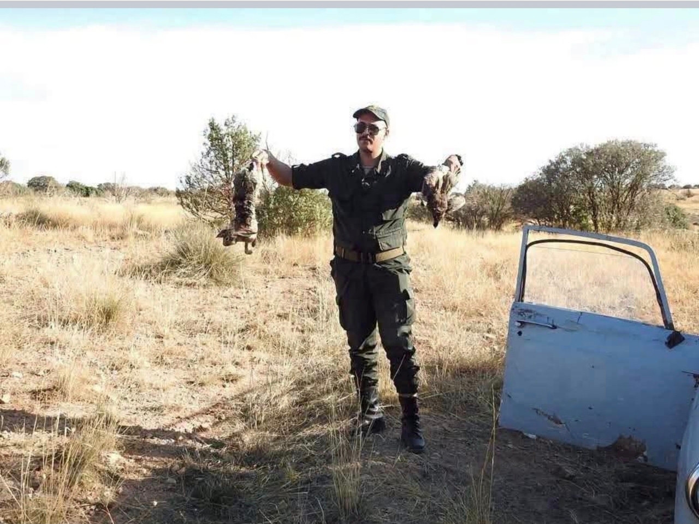
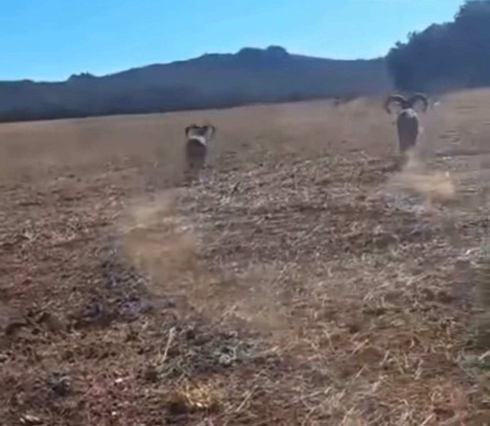
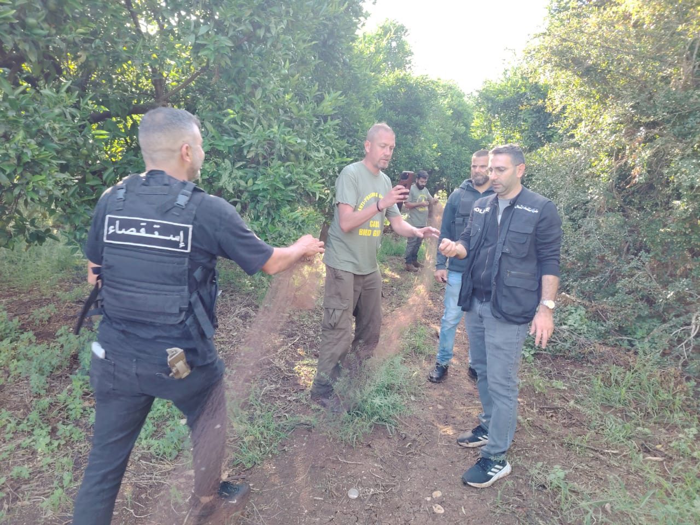
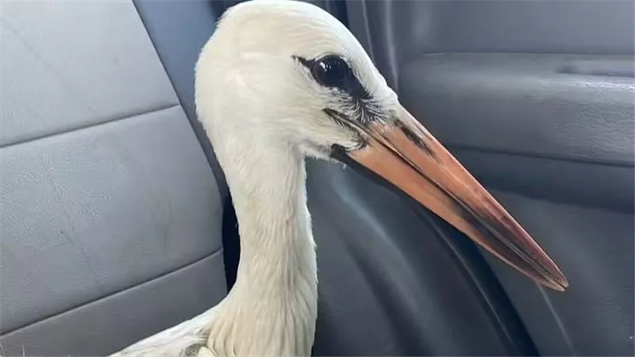
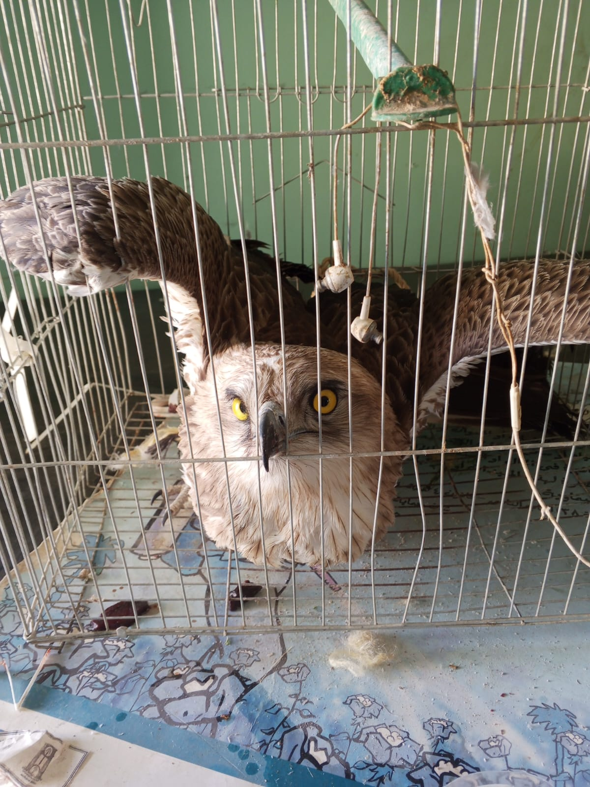
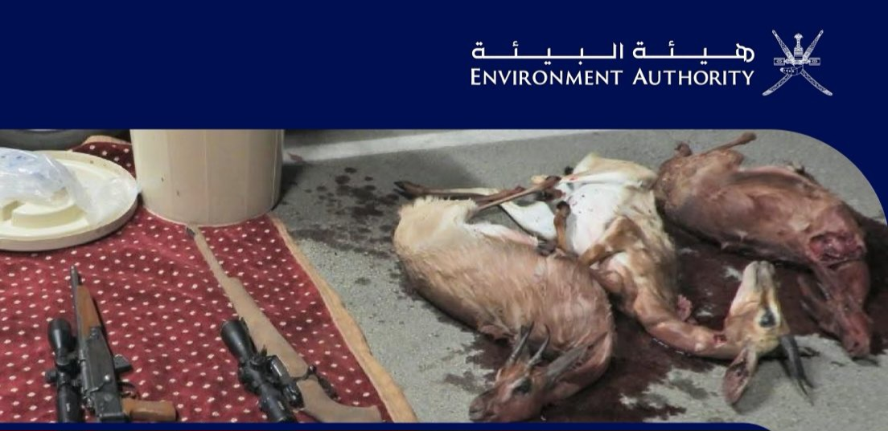
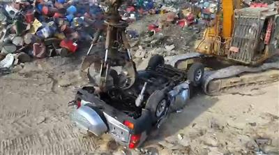

October 2026 roundup: 57 people apprehended or detained, 399 reported game animals seized, and thousands of metres of illegal hunting nets removed.
In news published during October 2026, Sayd recorded 23 enforcement operations involving people in connection with wildlife hunting across six Arab countries, involving 57 people according to the reported figures. In Egypt, Iraq, Algeria and Lebanon, the number of birds freed from captivity or released exceeded 2,707, alongside approximately 200 additional birds in Akkar, Lebanon.
Saudi Arabia recorded the largest reported number of seized game animals, with 391 hunted wild animals, while Algeria reported the detention of 22 hunters in four operations in Sidi Bel Abbès, alongside a separate operation in Mila. In Lebanon, the area of bird-catching nets removed in the Bekaa and Akkar totalled 42,390 square metres, after subtracting the area already counted in September.
Enforcement operations in 6 Arab countries
23 enforcement operations involving people in connection with wildlife hunting: 11 in Saudi Arabia, 5 in Algeria, 3 in Lebanon, 2 in Morocco, 1 in Oman and 1 in Kuwait involving entry into a reserve with the intent to hunt.
57 people apprehended or detained, according to published figures: 23 in Saudi Arabia, 22 in Algeria, 4 in Lebanon, 3 each in Morocco and Oman, and 2 in Kuwait. The total excludes people whose number was not disclosed in the incident in Mila, Algeria.
Seized game animals and weapons
399 game animals with reported counts: 391 in Saudi Arabia, 5 in Morocco and 3 in Oman. Additional game animals were seized in Algeria without a published count.
At least 19 weapons: 17 in Saudi Arabia, 1 in Lebanon and 1 in Morocco, alongside unspecified numbers of weapons in Algeria and Akkar. Reported ammunition totalled 2,199 rounds in Saudi Arabia, with unspecified quantities in Algeria.
Birds freed from captivity or released
More than 2,707 birds in four countries: more than 2,500 in Egypt, 100 in Iraq, 6 in Algeria and 101 in Lebanon, including 100 in the Bekaa and 1 kestrel released after treatment.
In addition, approximately 200 birds were freed in Akkar, Lebanon, and an unspecified number were freed in Syria.
Nets removed, measured in two different units
More than 9,500 metres of nets in Egypt and Syria: 7,000 metres in Egypt’s northern reserves and more than 2,500 metres in Al-Nabk, Syria. These figures relate to campaigns announced during the month, without a common starting date specified for the reporting period.
42,390 square metres in Lebanon, excluding the area already counted in September. Net area and net length are not added together because they use different units of measurement.
These totals reflect the published incidents and figures covered by this review, rather than a comprehensive count of all violations across Arab countries. Violation reports remain separate from the number of enforcement operations, including approximately 9 reports filed at the opening of Morocco’s hunting season.
Algeria
Hunting violations and seizures. An announcement published on 11 October reported the detention of 22 hunters in four operations in Sidi Bel Abbès, with guns, ammunition, partridges and hares seized in undisclosed numbers. The figures were republished on 17 October. On 16 October, a report described a fifth, separate operation at Jebel Hadid in Rouached, Mila Province, involving the detention of a group of people, confiscation of weapons and ammunition, and recovery of game animals, without specifying numbers.
Rescue and release. A report published on 15 October described the release of 6 goldfinches previously seized as part of efforts to combat trafficking in protected species in Oran. Video footage bearing the TSA logo also documented the release of 4 Barbary sheep in Moutas Reserve, Tlemcen.
Hunting regulation. A report published on 10 October stated that Tlemcen had issued 1,160 hunting licences, with 1,227 trained and qualified hunters and participation by 35 associations. In Mila, a report published on 14 October described the designation of 9 hunting areas and the suspension of hunting in 3 fire-affected areas covering a combined 1,359 hectares. A post attributed to Saïda Province, dated 17 October, reported the opening of the season in Oum El Hadha, in the municipality of Hassasna, and the distribution of hunting documents, without a licence count.


Saudi Arabia
The combined figures from 11 enforcement operations published between 4 and 29 October were 23 people, 391 hunted wild animals, 17 guns and 2,199 rounds of ammunition. These include the Prince Mohammed bin Salman Reserve incident published on 15 October, involving two people, a European turtle dove, a gun and 74 rounds, and the Medina incident published on 25 October, involving three people and 115 hunted animals. The seizure of 60 animals in King Abdulaziz Reserve was counted only once despite repeated coverage.
In breeding news, a report published on 25 October recorded 19 births during the third quarter in Imam Abdulaziz bin Mohammed and King Khalid reserves: 16 sand gazelles, 2 Arabian oryx and 1 Arabian gazelle.
Lebanon
Violations and seized birds. On 1 October, the Internal Security Forces announced the arrest of one person and seizure of a gun in Hosh Sneid, in an incident dating to 18 September, with 4 captive birds documented in a cage. A report published on 6 October described an Akkar operation in which two people were taken to the police station, one carrying a sparrowhawk in a bag, while two others were tracked to their homes. The operation report referred to two honey buzzards hunted by the latter pair. In the Bekaa campaign announced on 8 October, CABS reported that a man had been arrested for resisting security personnel.
Nets and birds freed. The newly counted area totalled 42,390 square metres, comprising 17,640 additional square metres in the Bekaa and 24,750 in Akkar. CABS reported the removal of 290 nets, including 125 in the Bekaa in early October and 165 in northern Lebanon. The Bekaa campaign freed 100 birds, while approximately 200 birds were freed in Akkar. 11 landowners were reported to the authorities, and 4 hunting devices, 3 loudspeakers and a battery were seized. Campaign details were published between 8 and 25 October.
Care and release. On 16 October, CABS announced the release of one kestrel after treatment for injuries caused by its eyes being sewn shut so it could be used as bait in a trap.
Bird admissions and rehabilitation. The Lebanese Association for Migratory Birds reported receiving 143 birds from 1 September through the date of its post, a reporting period spanning September and October. The latest arrival was a Short-toed Snake Eagle. Birds received by the association are usually injured or require rehabilitation before release. This is a tally of admissions for care, not of birds released, and is not added to the release totals.
Mammal rescue. A report published on 30 October described the rescue of one hyena from a trap in Mishmish, Akkar, followed by treatment and its return to its habitat.


Egypt
Birds freed and nets removed. In a statement published on 25 October, the director-general of the northern region’s reserves reported that more than 2,500 birds had been freed, 7,000 metres of nets removed and 7 sound devices seized. In an interview published on 23 October, the minister of local development and environment announced that more than 2,300 birds had been returned to the wild, as part of a broader account of reserve activities. The two bird totals are not added together because their scope and reporting periods may overlap. Freeing birds from captivity also does not necessarily mean that all are released immediately; veterinary care may precede release.
Rescue and care. A report published on 7 October described the rescue of 9 migratory birds in Red Sea reserves, including 6 white storks. A report published on 22 October described veterinary care for one snake eagle in the New Valley. Birds receiving care remain outside the release total.
Animal seizures. Animals seized in two possession or transport incidents totalled 38. Reports published on 19 and 28 October respectively described the seizure of 8 monkeys in 10th of Ramadan City and 30 young crocodiles on a train in Assiut. A subsequent press report stated that 3 crocodiles from the same seizure had died.


Syria
A report published on 9 October described the dismantling and destruction of more than 2,500 metres of nets in Al-Arqoub, Al-Nabk. On 27 October, a report on an enforcement campaign in Al-Nabk and Yabroud described the destruction of more than 500 metres, alongside the freeing of an unspecified number of birds. Both figures are presented because they appeared in different reports, but only the higher published figure is included in the total until it is clear whether the two operations were separate.
Qatar
A report published on 29 October described the seizure of 112 prohibited bird-attraction devices at various sites in Al Reem Reserve. The figures were republished on 30 October. On 24 October, a report gave a total of 275 animals rescued from January 2025 to the end of August 2026, of which 57 were released and 218 were sheltered. All three figures relate to that same extended reporting period.
Morocco
A report published on 6 October recorded approximately 9 violation reports at the opening of the hunting season, and an average of 1.91 partridges per hunter. Reports published on 24 and 26 October described two separate operations in Nador Province involving 3 people, with 5 partridges and 1 weapon seized, according to the available counts.
Iraq
A report published on 25 October described the release of 100 Iraqi white-cheeked bulbuls in Al-Zawraa Park, Baghdad, after their seizure at Al-Ghazl Market. The birds were counted once in the release total.
Oman
A report published on 4 October described the apprehension of 3 people in an incident involving the hunting of 3 Arabian gazelles in Dhofar Governorate.

Kuwait
A report published on 16 October described the apprehension of two people who entered Sabah Al-Ahmad Reserve in a vehicle without number plates with the intent to hunt. The measures taken included confiscation of hunting equipment and the vehicle.

Palestine
A report published on 27 October, and repeated on 30 October, described the completion of a national list comprising 186 bird species, in preparation for completing procedures to protect them from hunting and trade.
United Arab Emirates
A report published on 30 October described the colour-ringing of 604 birds in Abu Dhabi from January 2025 to mid-October 2026. The total comprised 256 shorebirds, 266 terns and gulls, and 82 ospreys.
Somalia
An update published on 2 October described care for 4 cheetah cubs previously seized as part of efforts to combat wildlife trafficking in Somaliland. The update covers care provided in July 2026.
Tunisia
An announcement published on 14 October described a meeting to combat the illegal hunting, capture and trafficking of wild birds, scheduled to bring together 10 partners from 8 Mediterranean countries. The meeting took place from 16 to 18 October; the two figures describe the participation announced beforehand.
Coverage and Counting Method
This edition covers news published from 1 to 31 October 2026. A publication date does not necessarily mean that the event took place during the same month. Extended reporting periods are therefore stated explicitly, including Qatar’s rescue totals, bird ringing in the UAE, third-quarter births in Saudi reserves and care for cheetah cubs in July.
Each incident was counted once when coverage was repeated. Where two totals could overlap, the higher published figure for each measure was used rather than adding them together. Enforcement operations were kept separate from violation reports, and birds receiving care alone were kept separate from birds freed from captivity or released. Incidents already counted in September are excluded from the October total, including the case involving 1,500 goldfinches in Algeria and the previously counted area of nets removed in Lebanon’s Bekaa.
Photos: SPA, Sayd, Tout sur l’agriculture en Algérie, TSA, Cairo24, Egyptian Environmental Affairs Agency, Oman Environment Authority, Kuwait Ministry of Interior.